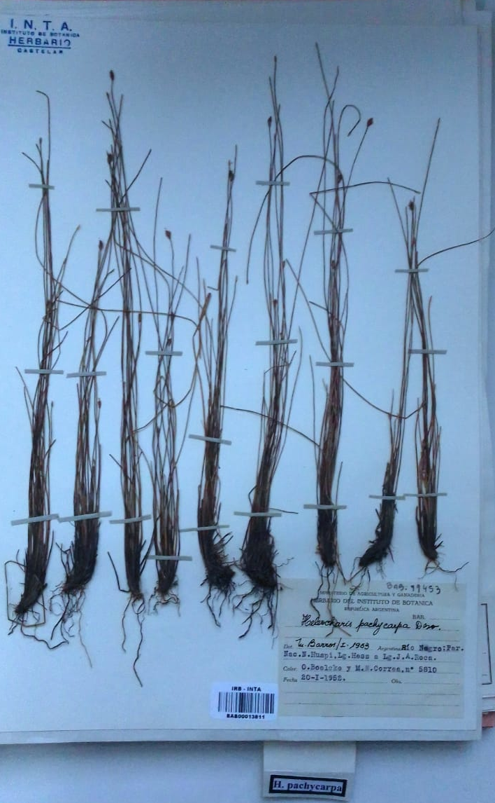

Acerca del herbario BAB

En botánica, un herbario (del latín herbarium) es una colección de plantas o partes de plantas,
secadas, conservadas, identificadas, y acompañadas de información crítica como la identidad del recolector,
el lugar y fecha de la recolección, y el hábitat donde se encontraba la planta. Aunque primariamente se llama herbario a la colección de plantas secas,
también se conoce como herbario al espacio donde se encuentra esta colección y a la institución que la gestiona.